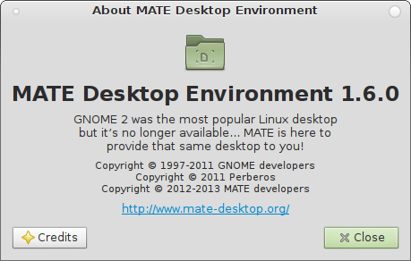

MATE 1.6 released
The team is proud to announce the release of MATE Desktop 1.6. This release is a giant step forward from the 1.4 release. In this release, we have replaced many deprecated packages and libraries with new technologies available in GLib. We have also added a lot of new features to MATE. We would like to thank every MATE contributor and user.

Main changes in 1.6 are:
systemd & logind support
- Added support for
systemd-logindinmate-session-manager,mate-screensaverandmate-power-manager(now you can reboot/shutdown without ConsoleKit)
Caja (file manager)
- Improved places sidebar
- Added support for new thumbnailers specification
- Added a new frame for thumbnails
- Wallpapers are now cached for a better memory management
- New connect server dialog from Nautilus 3
- Added support for freedesktop.org
- File Manager DBus Interface
- Fixed back vs parent directory selection
- Open terminal extension now support opening a remote terminal
Panel
- Added
--run-dialogoption to open the run dialog window Window list: you can use the mouse middle click button to close a window Workspace switcher: - Added an option to wrap around between workspaces with the mouse wheel
- Added a simple way for distributions to override the default panel layout Unfortunately, due to migration to GSettings, you will lose your current panel layout. All other settings will be migrated if you have MateConf 1.4 installed.
Marco (window manager)
- Added option to open new windows on the center of the screen
Control center
- Added option to enable Marco compositing manager and fast alt-tab in window preferences
- Set GSettings/GConf metacity theme if compiz or metacity are running
- Use same GNOME proxy settings of
gsettings-desktop-schemaspackage - Default applications: allow to set default terminal
Atril (document viewer)
- Added XPS backend
Calc
- Updated codebase
- Added buttons to support inverse trigonomic functions
Notification daemon
- Added option to specify which screen to display notifications on
- Show always a notification if it has ‘expires never’ as timeout (also if screensaver is active or there are active fullscreen windows)
Themes
- New GTK2/3 themes (Menta, BlackMATE, GreenLaguna, TraditionalGreen)
- Added GTK3 support for other GTK2 themes (TraditionalOk, TraditionalOkTest, ContrastHigh)
- Enabled text preview for text files
- Added some new icons
Settings daemon
- Added support for MPRIS2 to send media keys to media players
- Added option to draw the background if Caja is not active
- The daemon is now restarted by
mate-sessionif it crashes
Netbook applet
- Enable maximus only when window picker applet is added to the panel
Dropped packages
- Replaced MateConf with GSettings
- Replaced MateCorba/MateComponent with DBus
- Replaced MateVfs with GIO/GVFS
- Replaced
libmatenotifywithlibnotify - Removed
libmate(mate-open replaced with gvfs-open, GSettings schemas moved to mate-desktop package - Removed deprecated packages
libmateuilibmatecanvaslibmatecomponentuimate-mime-data
Other improvements
- Fixed a lot of code deprecations
- Fixed a lot of bugs
- Added and improved a lot of translations
We asked people from distributions that ship MATE what they think about our Desktop Environment.
George Vlahavas, Salix founder and project leader:
We believe MATE is a perfect match for Salix. MATE provides us with a familiar desktop environment that is powerful, solid and fast. Also, the MATE team are very friendly and a pleasure to work with and this means a lot to us. Thanks for giving us the choice of sticking with our favourite desktop guys
Clement Lefebvre, Linux Mint founder and project leader:
It’s extremely important to us that people are happy with their computer. When that environment we all loved and worked hard to improve since 2006 was discontinued we weren’t happy to let it go and to ask people to migrate to something new or something different. We worked really hard on making sure our users could continue to use their computer the way they wanted and we met a team of like-minded people who had taken the initiative to support that environment and to develop it even further. Mint and MATE go hand in hand and the relationship between the teams is excellent. Mint played an important role in the promotion and backing of MATE and we continue to help with its development. We’re very pleased with MATE, it’s exactly what we wanted, it started where GNOME left off and with each new iteration it keeps getting better.
Joost Ruis, strategy consultant of Sabayon:
We don’t like how upstream forced changes to users and want our users to have the option to decide what to use. With MATE in our repositories we are certain our users can always choose what works best for them.
Dan Mashal, MATE maintainer in Fedora:
Ever since the release of Fedora 15 was released I was extremely unhappy and frustrated with my desktop experience until I discovered MATE. Now on Fedora I can finally have a desktop that is sane, stable, fast and most importantly easy to use. With the hard work the team has done to also patch compiz to work on the newer releases of Fedora I can now have my Fedora 14 (considered by most to be the best release of Fedora) experience back with wobbly windows, desktop cube, animations, and 3d effects. I can’t stress how big of a loss this was to many users including myself. Now with MATE I don’t have to worry about what is going to break with the next Gnome release and what crazy design ideas they are going to have making me have to relearn a desktop interface every single Fedora release. With MATE 1.6 I can feel right back at home on my favorite Linux distribution and get back to work.
We also asked for a comment from the company who donated the server where we host MATE services. Martin Verges, CEO of FirstColo GmbH:
We are really happy to use the MATE Desktop Environment. This way we can keep a clean and well working desktop without lots of useless and distracting stuff. Until the end of 2012 our whole company were working with Ubuntu, but with the Unity Desktop and many other “end user features”, we were searching for new ways to get a desktop, free of software that pretends to make our lives easier. With MATE Desktop on Debian 7 Wheezy, we found a good working, high performance desktop that just works as we know it from years. We hope that the MATE Team will keep our classic Linux Desktop and bring to it new life some with new features, but with the good workflow kept in hand. So far, they have done great job, and we hope that soon the Debian Maintainers will add the MATE Desktop to their mirrors (and of course, that many others will use MATE too!).
MATE 1.6 is the result of 8 months of intense development and contains 1800 contributions by 39 people, and more than 150 translators.